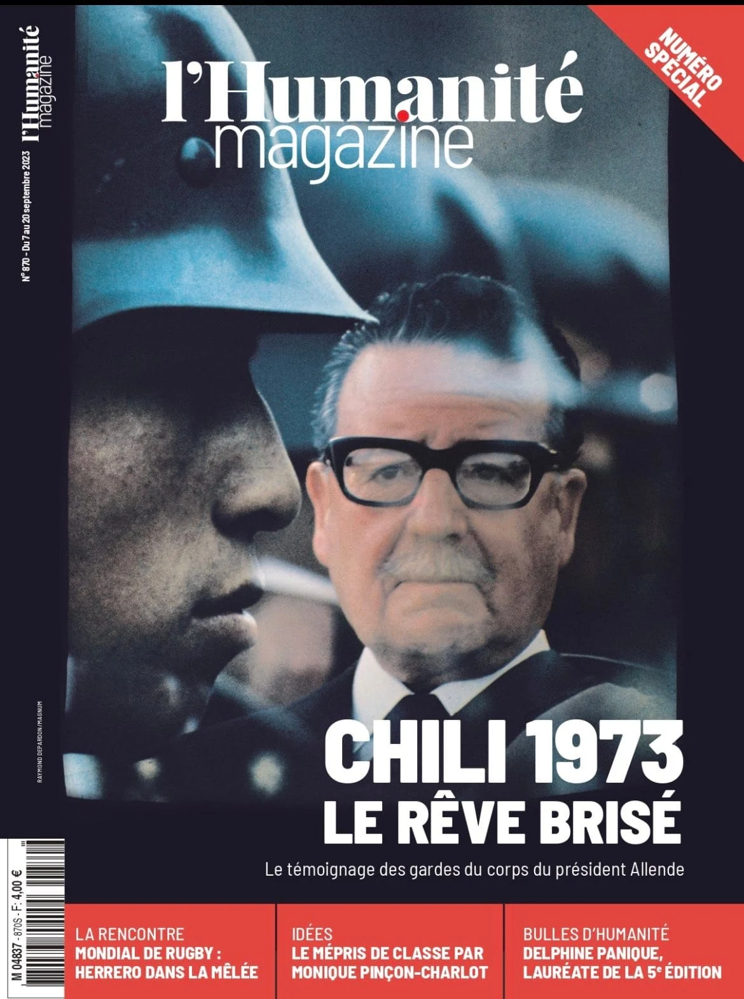

Publication d’archives
11 septembre 1973 - 11 septembre 2023 : 50 ans du coup d’État au Chili (Fabien Roussel)
Date indiquée par Facebook · 12 septembre 2023
Texte conservé avec la publication
11 septembre 1973 - 11 septembre 2023 : 50 ans du coup d’État au Chili (Fabien Roussel)
Il y a 50 ans, le 11 septembre 1973, les forces armées chiliennes, menées par le général Augusto Pinochet, exécutaient un coup d’État d'une violence brutale contre le Président Salvador Allende et la démocratie chilienne.
Malgré une résistance héroïque dans le palais présidentiel de La Moneda, encerclé par les troupes factieuses, sous les bombardements des avions de chasse, Salvador Allende trouva la mort, préférant le sacrifice à la reddition, assumant jusqu'à la fin les responsabilités qui lui avaient été confiées par le peuple chilien.
Cet assassinat de la démocratie avait été planifié, financé et encouragé par les secteurs conservateurs de la politique chilienne et le gouvernement des Etats-Unis, dans le but de mettre un terme à une expérience inédite de mobilisation populaire et de conquêtes sociales, ouverte trois ans plus tôt par la victoire de Salvador Allende et des forces de l'Unité populaire lors des élections.
En à peine 1000 jours, l'alliance de l’ensemble de la gauche avait accompli une œuvre titanesque en faveur du peuple et de la nation chilienne : nationalisation du cuivre et des banques, réforme agraire, création d'un secteur économique public, alphabétisation, accès à l'éducation supérieure pour les femmes, les jeunes ruraux et de la classe ouvrière, développement du logement social, accès universel au service public de santé.
Un processus marqué par une explosion culturelle inédite, résonnant des chansons de Victor Jara et de Quilapayun, des poèmes de Pablo Neruda, mais également de l'enthousiasme des millions de Chiliennes et de Chiliens qui eurent accès à l'art et la culture sous toutes leurs formes façonnant une nouvelle culture populaire.
Ce processus révolutionnaire visant à une émancipation radicale des individus et de la société était inacceptable pour les classes dirigeantes chiliennes qui préférèrent le noyer dans le sang plutôt que de céder le moindre de leurs privilèges.
A la suite du coup d'Etat, plus de 3000 personnes furent assassinées, torturées, victimes de disparition forcée. Des dizaines de milliers d'autres furent emprisonnées et soumises à des traitements atroces pour avoir simplement défendu la démocratie et la dignité humaine.
Au nom de toutes et tous les communistes français, je veux ici rendre hommage à toutes les victimes de la dictature chilienne. Leur courage, leur sacrifice n'ont pas été vains. Il nous impose un immense respect et nous oblige, à l'heure où les héritiers du fascisme ressurgissent et s'installent au pouvoir partout sur la planète.
Sur les ruines de la démocratie et des droits humains, les 17 ans de la dictature d'Augusto Pinochet ont également fait du Chili le véritable laboratoire mondial du néolibéralisme, détruisant les conquêtes sociales et démantelant les services publics pour ériger la tyrannie du profit.
Malgré la répression, des milliers de citoyens et militants ont mené la résistance pour le rétablissement de la démocratie et le droit de vivre dignement. Parmi ceux-ci, j'ai une pensée émue pour notre camarade Guillermo Teilier, président du Parti communiste du Chili, artisan de la résistance clandestine sous la dictature, puis de la reconstruction de la démocratie, qui nous a récemment quittés. Son combat vit aujourd'hui dans un parti renforcé, rajeuni et féminisé, en ordre de marche, moteur des luttes engagées par le mouvement populaire et des politiques de transformation sociale menées par le gouvernement, au Parlement, dans les collectivités.
La résistance contre le coup d’État et pour la démocratie fut aussi internationale. Dans le monde entier, un formidable mouvement populaire de dénonciation et de solidarité avec les démocrates chiliens s'est levé.
En France, le Parti communiste français – aux côtés d'organisations citoyennes, de syndicats et de partis progressistes – a pris toute sa place dans cette mobilisation. Les municipalités communistes ont ainsi été au premier rang de l'accueil de milliers de réfugiés contraints de fuir la répression, souvent avec leur famille. Aujourd'hui, c'est avec fierté que nous revendiquons cet héritage, face aux politiques actuelles qui restreignent le droit d'asile et qui cherchent à repousser celles et ceux qui fuient la persécution.
Par sa profondeur, par le souvenir qu'elle a laissé, l'Unité populaire fait partie du patrimoine vivant de celles et ceux qui, partout, luttent pour un monde meilleur. Elle nous laisse des enseignements pour trouver les voies de l'émancipation humaine : l'articulation indispensable entre justice sociale et démocratie ; l'importance vitale de défendre celle-ci contre tous ses ennemis ; l'indispensable implication du monde du travail et d’un rassemblement majoritaire et populaire pour soutenir les politiques de transformation sociale.
Comme le déclarait Salvador Allende dans sa dernière adresse aux chiliens, le 11 septembre 1973 : « L'Histoire est à nous et ce sont les peuples qui la font ».
Vive Salvador Allende, vive l'Unité populaire, vive la démocratie, vive la fraternité entre les peuples chilien et français !
Fabien Roussel, secrétaire national du PCF,

Sources
Archive rouge · export Facebook · AR-0002-FB-01586
À lire aussi · 6 novembre 2024 : le PCF répond à l’élection de Trump